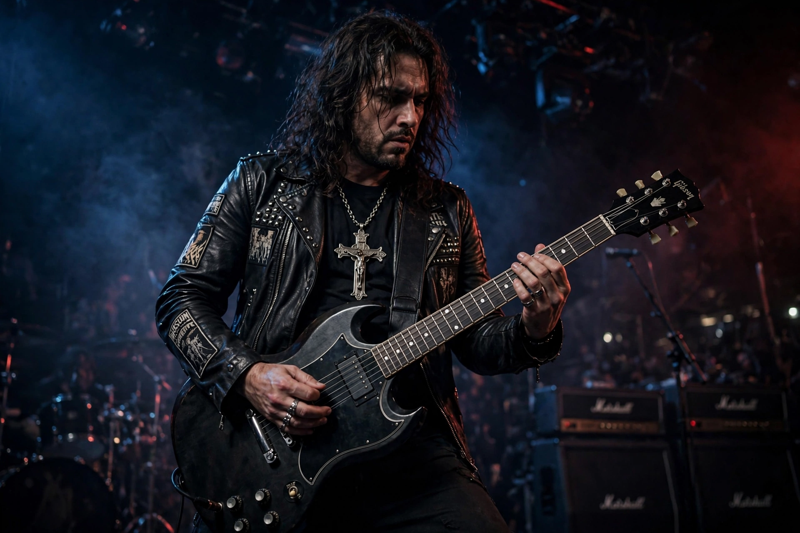

| Born | Frank Anthony Iommi, February 19, 1948, Birmingham, England |
|---|---|
| Genres | Heavy metal, hard rock, blues rock |
| Instruments | Guitar |
| Years active | 1964–present |
| Member of | Black Sabbath |
| Formerly of | Jethro Tull (briefly), Heaven & Hell |
Frank Anthony Iommi (born February 19, 1948) is an English musician. He co-founded the pioneering heavy metal band Black Sabbath in 1968 and was the band's guitarist, leader, co-founder, and primary composer. He is widely considered to be the inventor of the heavy metal guitar riff and one of the most influential guitarists of all time, ranked among the greatest metal guitarists by numerous publications.
Iommi was born in Handsworth, Birmingham, to Italian immigrant parents. He took up guitar as a teenager, inspired by Hank Marvin and blues players. On his last day of work at a sheet-metal factory at age 17, he lost the tips of the middle and ring fingers of his right (fretting, since he plays left-handed) hand in an industrial accident. Determined to continue, he fashioned prosthetic fingertips from a melted plastic bottle, used ultra-light strings and thimbles, and detuned his guitar to reduce string tension — adaptations that produced the dark, thick tone that came to define heavy metal.
Formed in Birmingham with Ozzy Osbourne, Geezer Butler, and Bill Ward, Black Sabbath released their self-titled debut in 1970, followed by Paranoid (1970) and Master of Reality (1971). Iommi's downtuned, tritone-centred riffs on songs like "Iron Man", "War Pigs", and "Children of the Grave" built the template for metal. He was the one constant member through five decades of line-up changes, fronting later eras with singers Ronnie James Dio, Ian Gillan, and Tony Martin, before the original line-up reunions and the band's farewell tour, The End, concluded in Birmingham in 2017.
Iommi was diagnosed with lymphoma in 2012 and underwent successful treatment while continuing to record, including Sabbath's final studio album 13 (2013). His signature Gibson SG is one of rock's most recognisable instruments, and generations of metal guitarists — from Metallica to the Seattle bands of the Sub Pop era — cite him as the genre's founding riff-writer.